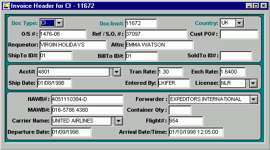

The example used for this tutorial will be to create a Commercial Invoice for items shipping against an Oracle order to one of our subsidiaries (this is the majority of the type of invoices we create and will allow the introduction of the main features of this program). To start a new invoice click on the Create New Invoice icon or select FILE|NEW from the menu bar. A blank Header window will appear with a new invoice number suggested by the Generator. You can use this number or override it with another number, but note that the Generator will not allow you to use a number that has already been used.
Determine if you are preparing a Commercial (CI) or a Pro-Forma (PF) Invoice (in this example, Commercial) then select the country you are shipping to from the drop-down country list . (NOTE: Selection of the correct country is important for obvious reasons, but also, because of the way the Generator was designed, the country selection may also depend on whether you are shipping to one of our subsidiaries or to a distributor. This affects the pricing on the invoice and will be discussed further in the DETAIL section.)
Order Schedule Number pertains to the site id and two digit suffix for the end-user of the shipment we are preparing. This field is most important for intercompany shipments.
The Reference field , for this example, consists of the Oracle order number. This field is what the Generator keys off to collect the order information from Oracle so it is important that it be entered correctly.
The Customer PO field is primarily used when shipping directly to a distributor as opposed to an intercompany shipment to one of our subsidiaries. The distributors purchase order number, as entered by OA into Oracle, should be placed in this field.
The requestor field contains the name of the ultimate end-user (as opposed to the ship-to which would be our subsidiary or distributor).
Enter appropriate persons name in attention-to field
By double clicking directly on the Ship To ID and Bill To ID fields you will be presented with the various choices for these fields that are currently in the Generator's database. Oracle will also automatically insert data into these fields, however, if the appropriate addresses are already set up in our database it is preferable to use the ID nos. for these. ID's for all our subsidiaries and most other addresses we ship to on a regular basis are already setup in our database.
We are not currently using the Sold To ID field.
Choose appropriate account number from the drop-down list or enter one manually. The Account Number field and the Transfer Rate field are linked. For example, if a COGS account number is entered (ie. 4801, 4802, etc.) the Transfer Rate field will automatically update to the intercompany rate that has been established for that account. If an account number is entered that does not have an associated transfer rate then it will default to 1.0. (The Transfer Rate field can be manually overridden, as can most fields in the Generator).
Exchange rate is directly linked to the country code that was entered earlier on the header and is updated automatically. Note that for shipments other than intercompany the exchange rate is not necessary and should be deleted from the final invoice (this is done in Word, not in the generator).
"Ship Date" is entered manually (MM/DD/YY). "Entered By" is updated automatically according to who logged on to the generator for that particular session (This can be overridden if necessary).
License can be chosen from the drop-down or entered manually.
The remainder of the Header screen contains the shipping information and is manually entered. These fields are self explanatory and should be filled as the flight information becomes available.
Be sure to save the Header either by clicking the save icon or by selecting FILE|SAVE from the menu bar (the Generator will not operate properly if the Header screen is not saved before continuing with the remainder of the invoice).
Please proceed to the DETAIL instructions.